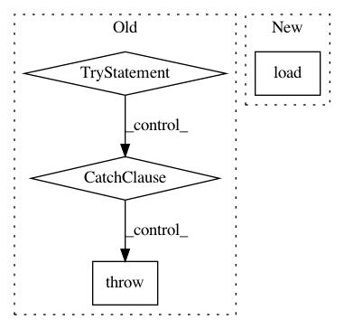

fbe35962f59485f6757060330cd45529c919eb5b,snntoolbox/simulation/target_simulators/INI_temporal_pattern_target_sim.py,SNN,load,#SNN#Any#Any#,180
Before Change
filepath = os.path.join(path, filename + ".h5")
try:
self.snn = keras.models.load_model(filepath, custom_layers)
except KeyError:
raise NotImplementedError(
"Loading SNN for INIsim is not supported yet.")
// Loading does not work anymore because the configparser object
// needed by the custom layers is not stored when saving the model.
// Could be implemented by overriding Keras" save / load methods, but
// since converting even large Keras models from scratch is so fast,
// there"s really no need.
def get_poisson_frame_batch(self, x_b_l):
Get a batch of Poisson input spikes.
Parameters
After Change
return np.cumsum(output_b_l_t, 2)
def load(self, path, filename):
SNN_.load(self, path, filename)
def set_spiketrains(self, spiketrains_b_l_t, i):
if self.spiketrains_n_b_l_t is not None:
self.spiketrains_n_b_l_t[i][0][:] = spiketrains_b_l_t
In pattern: SUPERPATTERN
Frequency: 3
Non-data size: 4
Instances
Project Name: NeuromorphicProcessorProject/snn_toolbox
Commit Name: fbe35962f59485f6757060330cd45529c919eb5b
Time: 2017-11-23
Author: bodo.rueckauer@gmail.com
File Name: snntoolbox/simulation/target_simulators/INI_temporal_pattern_target_sim.py
Class Name: SNN
Method Name: load
Project Name: jonas-koehler/s2cnn
Commit Name: d750d66fb998a44316000908f213ae73c53de97f
Time: 2018-03-03
Author: geiger.mario@gmail.com
File Name: examples/shrec17/dataset.py
Class Name: CacheNPY
Method Name: __call__
Project Name: loli/medpy
Commit Name: 973876881f7885f4bfebe72f4cd1ccc46046b0cc
Time: 2013-04-19
Author: maier@humbug.imi.uni-luebeck.de
File Name: bin/medpy_extract_sub_volume_auto.py
Class Name:
Method Name: main